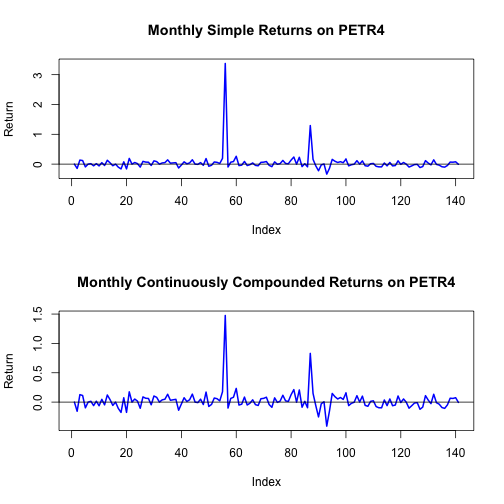
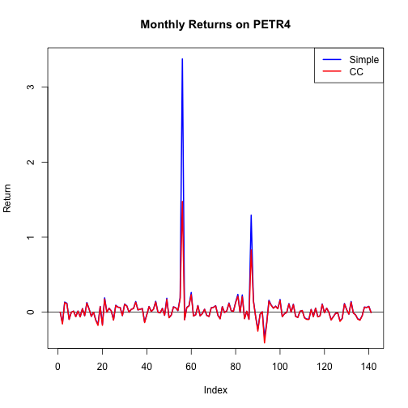
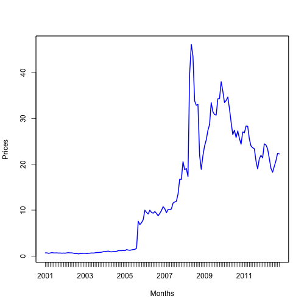

- PETR4.SA.csv file
- index.Rmd source file
Computing Returns
download resources
loading time series into data.frame
petr4.df = read.csv(file = "data/PETR4.SA.csv", header = TRUE, stringsAsFactors = FALSE)
class(petr4.df)
## [1] "data.frame"
str(petr4.df)
## 'data.frame': 142 obs. of 7 variables:
## $ Date : chr "2001-01-03" "2001-02-01" "2001-03-01" "2001-04-02" ...
## $ Open : num 5.89 6.81 6.87 5.62 6.75 7.47 6.74 6.78 6.84 6.35 ...
## $ High : num 7.04 7.35 7.22 6.82 7.56 7.86 6.85 7.12 7.38 6.91 ...
## $ Low : num 5.82 6.62 5.7 5.57 6.62 6.49 6.25 6.43 6 6.01 ...
## $ Close : num 6.81 6.86 5.87 6.68 7.47 6.75 6.78 6.88 6.41 6.49 ...
## $ Volume : int 41736900 30358200 37962600 34395000 27670200 30358800 38772600 28004400 40997500 33448400 ...
## $ Adj.Close: num 0.69 0.69 0.59 0.67 0.75 0.68 0.68 0.69 0.65 0.66 ...
data.frame head
head(petr4.df)
## Date Open High Low Close Volume Adj.Close
## 1 2001-01-03 5.89 7.04 5.82 6.81 41736900 0.69
## 2 2001-02-01 6.81 7.35 6.62 6.86 30358200 0.69
## 3 2001-03-01 6.87 7.22 5.70 5.87 37962600 0.59
## 4 2001-04-02 5.62 6.82 5.57 6.68 34395000 0.67
## 5 2001-05-03 6.75 7.56 6.62 7.47 27670200 0.75
## 6 2001-06-01 7.47 7.86 6.49 6.75 30358800 0.68
data.frame tail
tail(petr4.df)
## Date Open High Low Close Volume Adj.Close
## 137 2012-05-02 21.26 22.25 18.08 19.13 27983000 19.13
## 138 2012-06-01 18.53 20.15 17.42 18.25 30203300 18.25
## 139 2012-07-02 18.10 20.31 17.97 19.50 26911600 19.50
## 140 2012-08-01 19.50 21.88 18.83 20.75 25709700 20.75
## 141 2012-09-03 20.77 23.84 20.28 22.37 23399800 22.37
## 142 2012-10-01 22.33 23.10 22.02 22.25 21491800 22.25
data.frame properties
colnames(petr4.df)
## [1] "Date" "Open" "High" "Low" "Close" "Volume"
## [7] "Adj.Close"
class(petr4.df$Date)
## [1] "character"
class(petr4.df$Adj.Close)
## [1] "numeric"
indexing data.frame - always returns a vector
petr4.df[1:5, "Adj.Close"] # using column name
## [1] 0.69 0.69 0.59 0.67 0.75
petr4.df[1:5, 7] # using column index
## [1] 0.69 0.69 0.59 0.67 0.75
petr4.df$Adj.Close[1:5] # using attribite reffering to column
## [1] 0.69 0.69 0.59 0.67 0.75
drop=FALSE keeps data.frame structure
petr4.df[1:5, "Adj.Close", drop = FALSE]
## Adj.Close
## 1 0.69
## 2 0.69
## 3 0.59
## 4 0.67
## 5 0.75
extracting data.frame subsets isn't easy
c(which(petr4.df$Date == "2010-01-04"), which(petr4.df == "2010-07-01"))
## [1] 109 115
petr4.df[which(petr4.df == "2010-01-04"):which(petr4.df == "2010-07-01"), ]
## Date Open High Low Close Volume Adj.Close
## 109 2010-01-04 36.95 37.50 33.51 34.17 19068700 33.45
## 110 2010-02-01 34.29 34.89 30.72 34.61 19589300 33.88
## 111 2010-03-01 34.82 37.48 34.12 35.39 21152500 34.64
## 112 2010-04-01 35.66 36.41 31.90 32.80 20999100 32.11
## 113 2010-05-03 32.55 32.63 26.00 29.60 23845800 29.16
## 114 2010-06-01 29.00 30.38 26.71 26.86 17958000 26.46
## 115 2010-07-01 27.11 28.28 26.31 27.85 12439600 27.43
defining rownames
petr4Prices.df = petr4.df[, "Adj.Close", drop = FALSE]
rownames(petr4Prices.df) = petr4.df$Date
head(petr4Prices.df)
## Adj.Close
## 2001-01-03 0.69
## 2001-02-01 0.69
## 2001-03-01 0.59
## 2001-04-02 0.67
## 2001-05-03 0.75
## 2001-06-01 0.68
indexing by rownames
petr4Prices.df["2010-01-04", 1]
## [1] 33.45
petr4Prices.df["2010-01-04", 1, drop = FALSE]
## Adj.Close
## 2010-01-04 33.45
plotting data
plot(petr4.df$Adj.Close)

plot(petr4.df$Adj.Close, type = "l", col = "blue", lwd = 2, ylab = "Adjusted close",
main = "Monthly closing price of PETR4")
legend(x = "topleft", legend = "PETR4", lty = 1, lwd = 2, col = "blue")

simple returns
\[ R_t = \frac{P_t - P_{t-1}}{P_{t-1}} \]
n = nrow(petr4Prices.df) # number of rows
petr4.ret = (petr4Prices.df[2:n, 1] - petr4Prices.df[1:(n - 1), 1])/petr4Prices.df[1:(n -
1), 1]
head(petr4.ret)
## [1] 0.00000 -0.14493 0.13559 0.11940 -0.09333 0.00000
petr4.ret is not a data.frame object
class(petr4.ret)
## [1] "numeric"
names(petr4.ret) = rownames(petr4Prices.df)[2:n] # adding names to a vector
head(petr4.ret)
## 2001-02-01 2001-03-01 2001-04-02 2001-05-03 2001-06-01 2001-07-02
## 0.00000 -0.14493 0.13559 0.11940 -0.09333 0.00000
simple returns as data.frame objects - use drop=FALSE
petr4.ret.df = (petr4Prices.df[2:n, 1, drop = FALSE] - petr4Prices.df[1:(n - 1),
1, drop = FALSE])/petr4Prices.df[1:(n - 1), 1, drop = FALSE]
head(petr4.ret.df)
## Adj.Close
## 2001-02-01 0.00000
## 2001-03-01 -0.14493
## 2001-04-02 0.13559
## 2001-05-03 0.11940
## 2001-06-01 -0.09333
## 2001-07-02 0.00000
continuously compounded returns
\[ r_t = \log(1 + R_t) = \log \left( \frac{P_t}{P_{t-1}} \right) \]
easy way
petr4.ccret = log(1 + petr4.ret)
head(petr4.ccret)
## 2001-02-01 2001-03-01 2001-04-02 2001-05-03 2001-06-01 2001-07-02
## 0.00000 -0.15657 0.12716 0.11280 -0.09798 0.00000
alternatively
petr4.ccret = log(petr4Prices.df[2:n, 1]) - log(petr4Prices.df[1:(n - 1), 1])
names(petr4.ccret) = rownames(petr4Prices.df)[2:n]
head(petr4.ccret)
## 2001-02-01 2001-03-01 2001-04-02 2001-05-03 2001-06-01 2001-07-02
## 0.00000 -0.15657 0.12716 0.11280 -0.09798 0.00000
comparing returns
head(cbind(petr4.ret, petr4.ccret))
## petr4.ret petr4.ccret
## 2001-02-01 0.00000 0.00000
## 2001-03-01 -0.14493 -0.15657
## 2001-04-02 0.13559 0.12716
## 2001-05-03 0.11940 0.11280
## 2001-06-01 -0.09333 -0.09798
## 2001-07-02 0.00000 0.00000
plotting simple and continuous returns
par(mfrow = c(2, 1)) # split screen into 2 rows and 1 column
plot(petr4.ret, main = "Monthly Simple Returns on PETR4", ylab = "Return", type = "l",
col = "blue", lwd = 2)
abline(h = 0)
plot(petr4.ccret, main = "Monthly Continuously Compounded Returns on PETR4", ylab = "Return",
type = "l", col = "blue", lwd = 2)
abline(h = 0)
par(mfrow = c(1, 1)) # reset the screen to 1 row and 1 column

on the same graph
plot(petr4.ret, main = "Monthly Returns on PETR4", ylab = "Return", type = "l", col = "blue",
lwd = 2)
abline(h = 0)
lines(petr4.ccret, col = "red", lwd = 2)
legend(x = "topright", legend = c("Simple", "CC"), lty = 1, lwd = 2, col = c("blue",
"red"))

petr4.gret = 1 + petr4.ret # compute gross returns
petr4.fv = cumprod(petr4.gret) # compute future values
plot(petr4.fv, type = "l", col = "blue", lwd = 2, ylab = "$$", main = "growth of $1 invested in PETR4")

could life be easier?
R has a large number of packages that make life easier.
- PerformanceAnalytics: Econometric tools for performance and risk analysis
- quantmod: functions for quantitative modelling in finance
- zoo: Z's ordered observations
- xts: Extensible time series
- tseries: Time series analysis and computational finance
- fPortfolio: Portfolio Selection and Optimization
- mvtnorm: Multivariate normal and multivariate t distribution
CRAN
CRAN Task Views
Finance Task View
PerformanceAnalytics package
library(PerformanceAnalytics)
## Loading required package: zoo
## Attaching package: 'zoo'
## The following object(s) are masked from 'package:base':
##
## as.Date, as.Date.numeric
## Loading required package: xts
## Attaching package: 'PerformanceAnalytics'
## The following object(s) are masked from 'package:graphics':
##
## legend
dates.petr4 = as.yearmon(petr4.df$Date, format = "%Y-%m-%d") # convert to month-year
head(dates.petr4)
## [1] "Jan 2001" "Feb 2001" "Mar 2001" "Apr 2001" "May 2001" "Jun 2001"
petr4.z = zoo(x = petr4.df$Adj.Close, order.by = dates.petr4) # create zoo object
class(petr4.z)
## [1] "zoo"
head(petr4.z)
## Jan 2001 Feb 2001 Mar 2001 Apr 2001 May 2001 Jun 2001
## 0.69 0.69 0.59 0.67 0.75 0.68
plot(petr4.z, lwd = 2, col = "blue", ylab = "Prices", xlab = "Months")

subsetting zoo objects
petr4.z[as.yearmon(c("Jan 2010", "Jan 2011"))]
## Jan 2010 Jan 2011
## 33.45 26.85
window(petr4.z, start = as.yearmon("Jan 2010"), end = as.yearmon("Jan 2011"))
## Jan 2010 Feb 2010 Mar 2010 Apr 2010 May 2010 Jun 2010 Jul 2010 Aug 2010
## 33.45 33.88 34.64 32.11 29.16 26.46 27.43 25.83
## Sep 2010 Oct 2010 Nov 2010 Dec 2010 Jan 2011
## 27.25 25.62 24.37 27.05 26.85
computing returns made simple
core (no-package dependency)
petr4Ret.z = diff(petr4.z)/lag(petr4.z, k = -1)
petr4Retcc.z = diff(log(petr4.z))
head(merge(petr4Ret.z, petr4Retcc.z))
## petr4Ret.z petr4Retcc.z
## Feb 2001 0.00000 0.00000
## Mar 2001 -0.14493 -0.15657
## Apr 2001 0.13559 0.12716
## May 2001 0.11940 0.11280
## Jun 2001 -0.09333 -0.09798
## Jul 2001 0.00000 0.00000
with PerformanceAnalytics functions
petr4Ret.z = CalculateReturns(petr4.z, method = "simple")
petr4Retcc.z = CalculateReturns(petr4.z, method = "compound")
head(merge(petr4Ret.z, petr4Retcc.z))
## e1 petr4Retcc.z
## Jan 2001 0 NA
## Feb 2001 0 0.00000
## Mar 2001 0 -0.15657
## Apr 2001 0 0.12716
## May 2001 0 0.11280
## Jun 2001 0 -0.09798
chart.CumReturns(petr4Ret.z, lwd = 2, col = "red", main = "Growth of $1")

quantmod package
library(quantmod)
## Loading required package: Defaults
## Loading required package: TTR
## Loading required package: methods
getSymbols("YHOO") # fetching time series as xts object
## [1] "YHOO"
class(YHOO)
## [1] "xts" "zoo"
colnames(YHOO)
## [1] "YHOO.Open" "YHOO.High" "YHOO.Low" "YHOO.Close"
## [5] "YHOO.Volume" "YHOO.Adjusted"
start(YHOO) # first date
## [1] "2007-01-03"
end(YHOO) # last date
## [1] "2012-12-20"
head(YHOO)
## YHOO.Open YHOO.High YHOO.Low YHOO.Close YHOO.Volume YHOO.Adjusted
## 2007-01-03 25.85 26.26 25.26 25.61 26352700 25.61
## 2007-01-04 25.64 26.92 25.52 26.85 32512200 26.85
## 2007-01-05 26.70 27.87 26.66 27.74 64264600 27.74
## 2007-01-08 27.70 28.04 27.43 27.92 25713700 27.92
## 2007-01-09 28.00 28.05 27.41 27.58 25621500 27.58
## 2007-01-10 27.48 28.92 27.44 28.70 40240000 28.70
chartSeries(YHOO, theme = chartTheme("white"))

Computing Returns